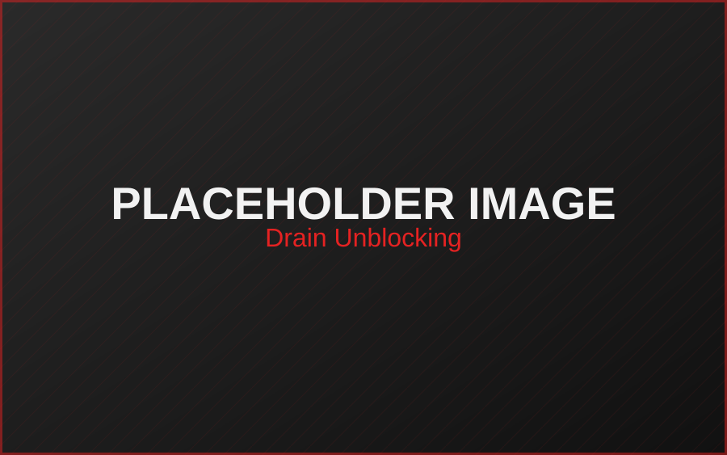

Most Common Call
DRAIN
UNBLOCKING
Blocked kitchen sink, slow-draining bath or a blocked external drain? The Drain Team handles drain unblocking in Dublin for domestic and commercial properties, using professional drainage equipment to clear the blockage and restore flow.
Kitchen & bathroom drains
External & underground drains
Domestic & commercial properties
Professional drainage equipment